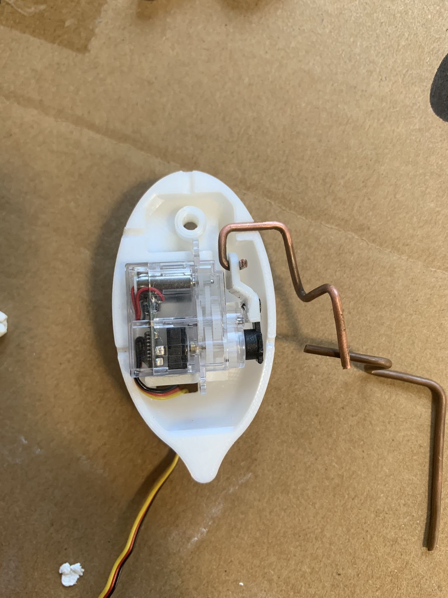
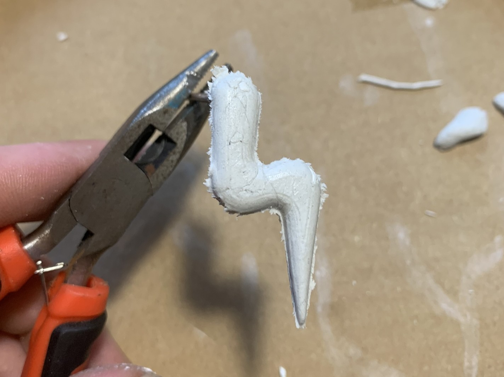
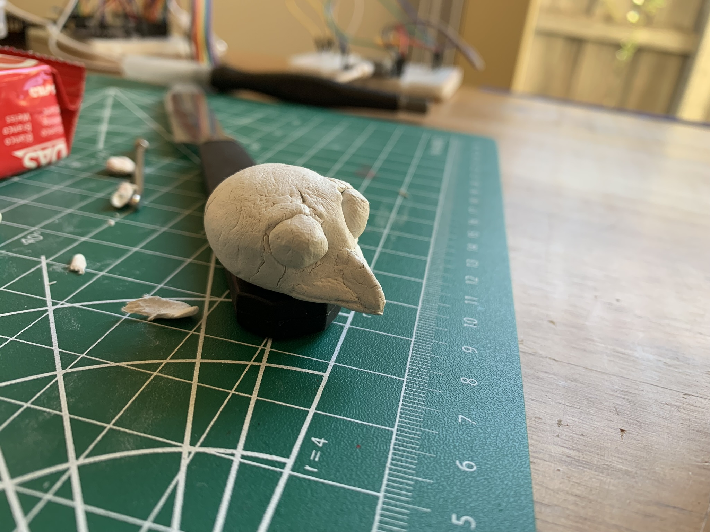
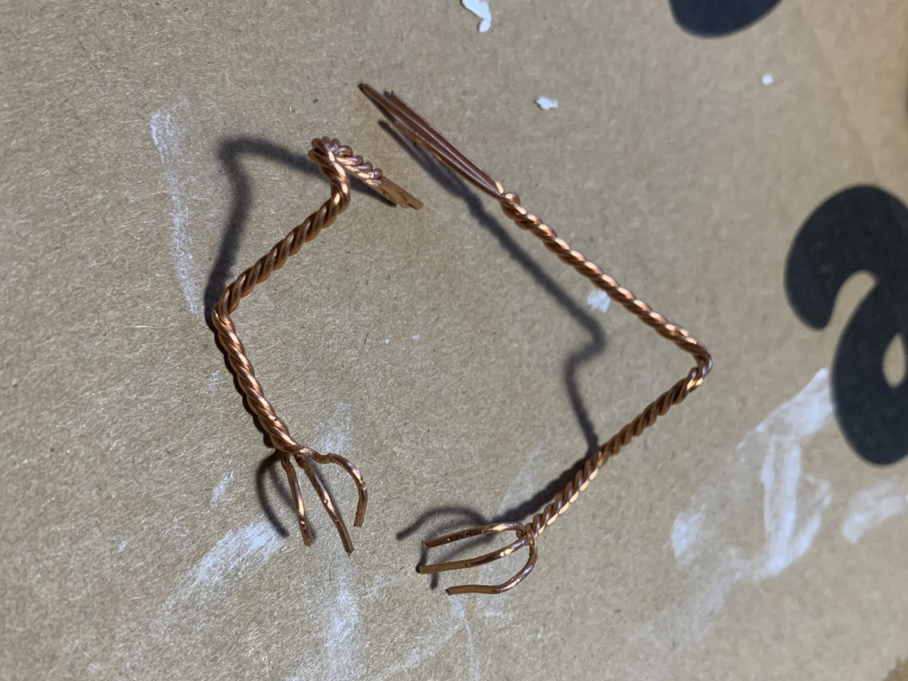
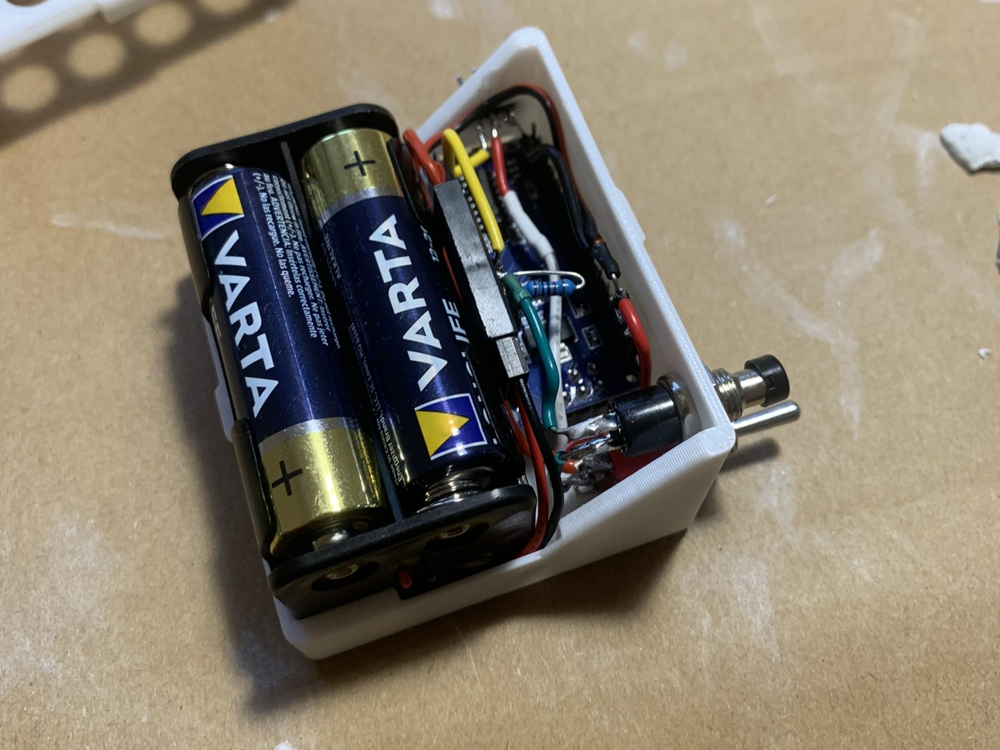

An Animatronic movie prop for a student horror film. The brief was to design a surreal-looking hatchling, that would twitch has it dies in the hands of the main character.
1 / 6
The prop used a 3D printed torso that housed a small servo. The servo connected to the copper wire armature to create a twitching motion.

2 / 6
I used 2-Part epoxy putty and 3D printed moulds to sculp the wings

3 / 6
The head was sculpted from air dry clay. This led to cracking on the surface which ultimately improved the "surreal" look that was trying to be achieved.

4 / 6
I made wire armatures for the legs and wrapped them in epoxy putty, leaving the claws exposed.

5 / 6
The bird was operated with an external controller. It used an Arduino Nano which controlled the servo and had an onboard power supply. The animatronic was connected to the control box with a long wire that was hidden behind the actors arm.

6 / 6
The final prop was painted with an airbrush and work successfully during filming.